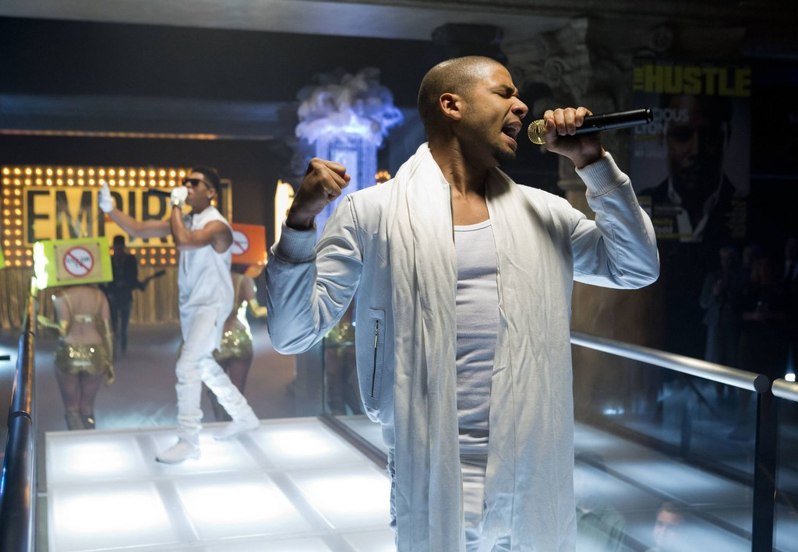
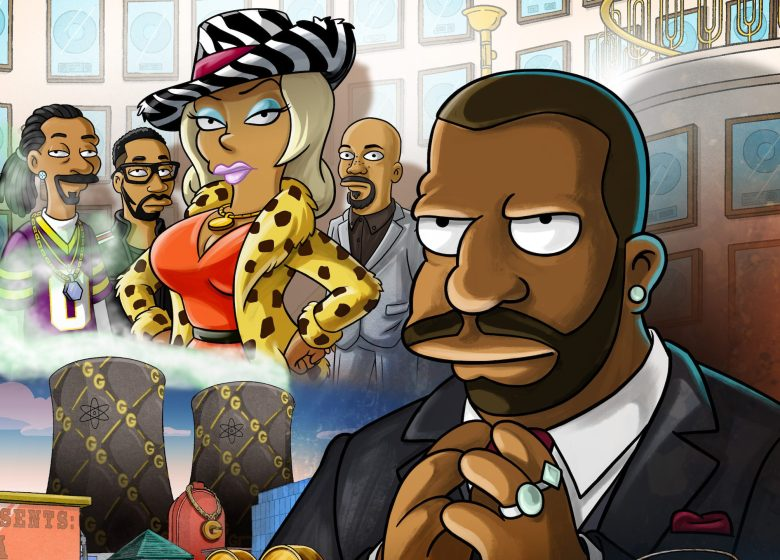
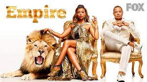

Hip-hop artist and CEO of Empire Entertainment, Lucious Lyon, has always ruled unchallenged, but a medical diagnosis predicts he will be incapacitated in three years, which prompts the sharks to circle. Without further damaging his family, he must decide which of his three sons will take over. His favorite, young Hakeem, is a gifted musician but values fame over hard work. Middle son, Jamal, is talented and shy but gay -- embarrassing to Lyon. The oldest, Andre, is business-minded but lacks charisma. The reappearance of Cookie, his ex-wife, complicates things; she says he owes her for taking the fall for the drug-running that financed his early career
1 Good Enough (feat. Jussie Smollett) Empire Cast 2 What Is Love (feat. V. Bozeman) 3 No Apologies (feat. Jussie Smollett & Yazz) Empire Cast 4 Keep It Movin' (feat. Serayah McNeill & Yazz) Empire Cast 5 Keep Your Money (feat. Jussie Smollett) Empire Cast 6 . Drip Drop (feat. Yazz & Serayah McNeill) Empire Cast 7 Can't Truss 'Em (feat. Yazz) Empire Cast 8 I Wanna Love You (feat. Jussie Smollett) Empire Cast 9 Money for Nothing (feat. Jussie Smollett & Yazz) Empire Cast 10 Walk Out On Me (feat. Courtney Love) Empire Cast 11 You're So Beautiful (feat. Jussie Smollett & Yazz) Empire Cast 12 Conqueror (feat. Estelle & Jussie Smollett) Empire Cast 13 Remember the Music (feat. Jennifer Hudson) Empire Cast 14 Shake Down (feat. Mary J. Blige & Terrence Howard) Empire Cast 15 Power of the Empire (feat. Yazz) Empire Cast 16 Nothing to Lose (feat. Jussie Smollett) Empire Cast 17 Whatever Makes You Happy (feat. Jennifer Hudson & Juicy J) Empire Cast 18 New York Raining (feat. Charles Hamilton & Rita Ora) Empire Cast
They say what goes up must come down and the Empire television show has not been an exception to the rule. The show's ratings have been consistently decreasing this season. While some blame the show's celebrity guest stars others, like 50 Cent, have criticized Lee Daniels for pushing "too much gay stuff." Empire's most recent ratings and the show's number of viewers have been more believable as of late. After the show's record-breaking first season, the show set the bar extremely high for itself. So how many people watched Empire?the show's numbers remain unbelievable considering the fact she made her acting debut on Empire. The Empire television show is still the number 1 show of Wednesday nights yet its most recent episode, True Love Never, dropped to a season-low 4.2 ratings among the 18-49 adult demographic.
After struggling in the ratings this fall, Fox just received some very welcome news: Wednesday night's hip-hop drama Empire has opened strong. Blessed with an American Idol lead-in – yet also improving upon it – Empire premiered to 9.8 million viewers and a 3.7 rating among adults 18-49.The ratings are typically the best indication of a show’s likelihood of staying on the air. The higher the ratings (particularly the 18-49 demo), the better the chances for survival. This chart will be updated as new ratings data becomes available — usually the next day, around 11:30am EST/8:30am PST. Refresh to see the latest.
